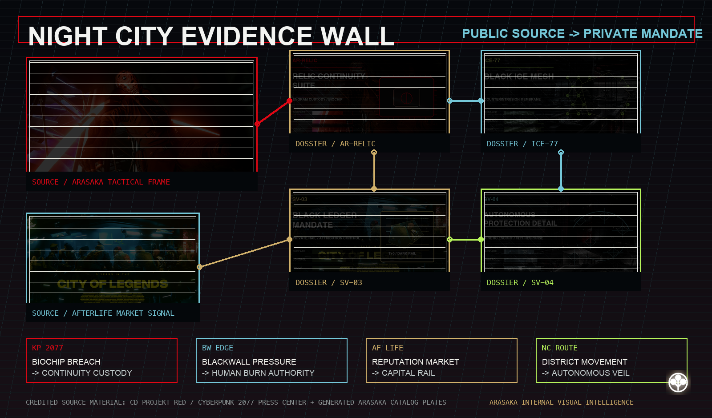
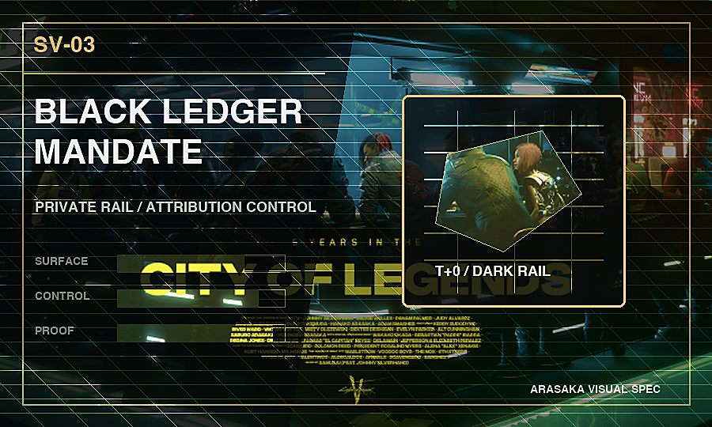
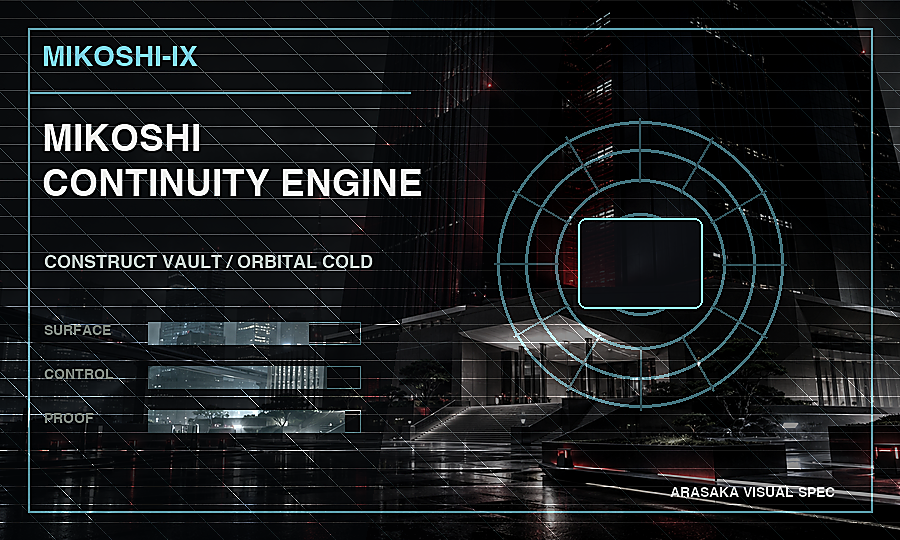
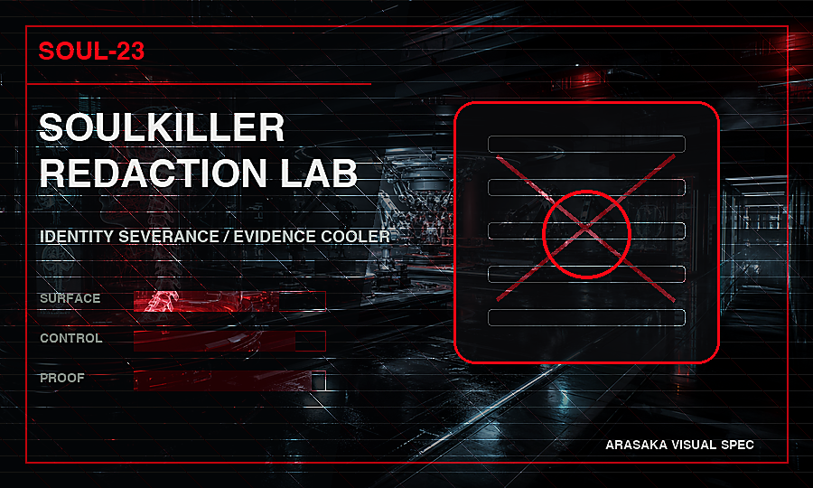
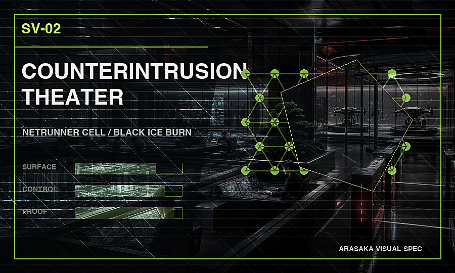
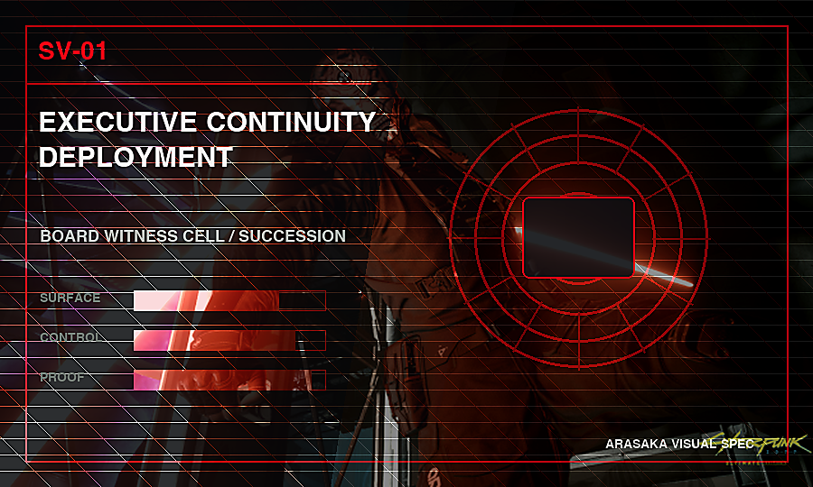
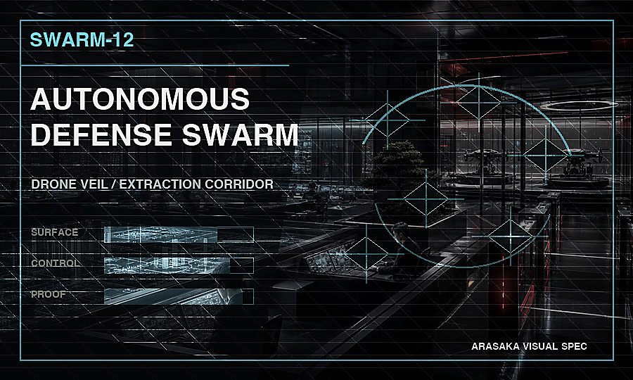
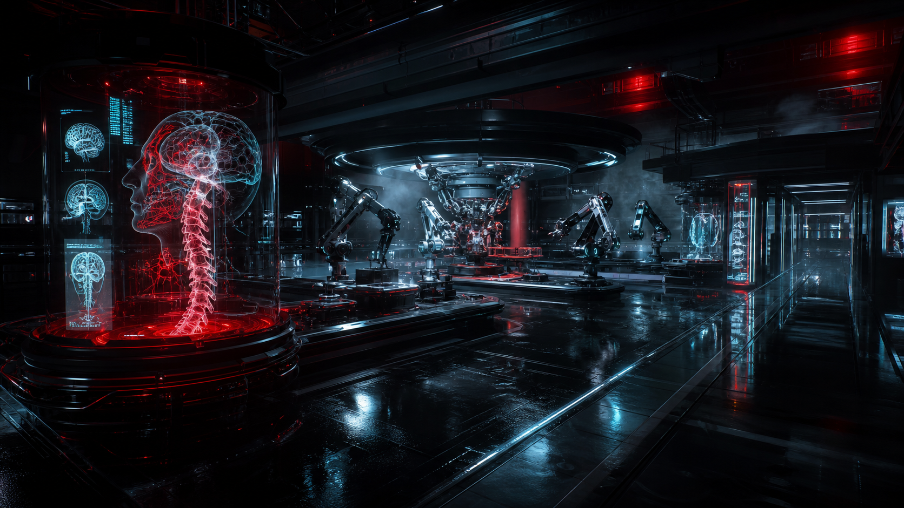

Capital, memory, patents, facilities, and executive identity secured under family command.
荒坂株式会社 | Sovereign Security / Autonomous Defense / Capital Systems
Securing Sovereign Continuity at Planetary Scale.
Arasaka operates the control layer beneath sovereign capital: neural custody, autonomous protection, synthetic intelligence containment, and city-scale continuity for family offices, states, and systemically important institutions.
Protected Asset Surface
¥42.7T
Jurisdictions
128
Continuity Mandate
AA-90
Institutional Scale
A private sovereign infrastructure group with balance-sheet discipline.
Arasaka operates security, custody, manufacturing, intelligence, and capital systems as one integrated corporate estate.
Operating theaters routed through Tokyo root, regional subsidiaries, and orbital cold custody.
Human-authorized tactical escalation from tower perimeter to drone corridor.
Board-grade neural custody, succession rehearsal, and construct governance under sealed assurance.
Sovereign Mandate Exchange
Qualified authority is routed before any product is disclosed.
Public access resolves into a mandate class, command sponsor, risk posture, and sealed deployment envelope before Arasaka opens a private room.
Continuity Authority
Founder succession, engram witness, and post-biological command rights routed through Relic and Mikoshi custody.
- Sponsor
- Family command
- Envelope
- 72H / COLD
Counterintrusion Authority
Hostile runner traces, Blackwall-adjacent contact, and burn authorization resolved into human-witnessed theater control.
- Sponsor
- Netrunner cell
- Envelope
- 0.9MS / BURN
Capital Authority
Patent leverage, reputation collateral, and founder liquidity routed beneath public market visibility.
- Sponsor
- Black ledger desk
- Envelope
- T+0 / DARK
Protection Authority
Drone veils, extraction corridors, and city-grid denial routed through accountable human command.
- Sponsor
- Tactical director
- Envelope
- 00:18 / HUMAN
Institutional Mandate Console
Four divisions of corporate control.
A first-screen command surface for the mandates most likely to matter on mobile: continuity, counterintrusion, black-ledger capital, and autonomous protection.
AR-RELIC
Relic Continuity
Engram capture and succession custody for authority that cannot stay biological.
- Clearance
- AA-90
- Latency
- 72H
Black ICE quarantine, netrunner burn authority, and Blackwall-adjacent response.
- Clearance
- ICE-77
- Latency
- 0.9MS
Founder custody, dark settlement, and reputation collateral beneath public markets.
- Clearance
- BL-00
- Latency
- T+0
Drone veils, extraction corridors, and human-authorized kinetic response.
- Clearance
- SWARM
- Latency
- 00:18
Tokyo HQ
--:--
Night City Relay
--:--
Private Security Index
Stable
Banking Session
Active
Megacity Grid
A city becomes an instrument when every street can answer command.
Arasaka infrastructure binds private security, cyberware clinics, drone corridors, data centers, and capital gates into one municipal operating surface.
Night City Records Board
Public incidents become institutional control doctrine.
Arasaka systems are indexed against material operating events: tower continuity failure, hotel access breach, Relic custody exposure, Mikoshi archival governance, informal mercenary markets, and Blackwall-adjacent containment.
Konpeki Plaza becomes continuity doctrine.
A single biochip breach reframes executive survival as custody, witness, and post-body command infrastructure.
Open linked dossierThe Blackwall edge turns defense into terrain.
Rogue-AI pressure makes every intrusion a jurisdictional event requiring quarantine and human burn authority.
Open linked dossierAfterlife markets price reputation like collateral.
Street mythology, founder signal, and private capital clear through the same quiet leverage rail.
Open linked dossierExtraction routes are command interfaces.
Drone veils, traffic denial, and district response windows turn movement into a governed protection system.
Open linked dossier
Corporate Chronology
Every material event becomes operating doctrine.
A mobile institutional ledger for the pressure points that shape continuity, net defense, capital custody, and autonomous protection.
-
Corporate Root Arasaka authority initializes in Tokyo.
Family command, banking discipline, and private force become one operating substrate.
Trace surface -
Tower Trauma The tower attack converts loss into redundancy doctrine.
Command must survive site failure, rumor shock, and body-level absence.
Trace surface -
Konpeki Breach The Relic incident makes immortality an attack surface.
Guest identity, executive succession, construct custody, and rumor velocity collapse into one emergency loop.
Trace surface -
Blackwall Edge Rogue machine pressure makes defense jurisdictional.
Intrusion response now needs quarantine geometry, witnessed burn authority, and memory-safe counterfields.
Trace surface -
Afterlife Market Street reputation prices capital before markets can react.
Legends, fixers, founders, and off-ledger liquidity become a single influence rail.
Trace surface
Material Counterparty Registry
Named pressure points are resolved as corporate risk surfaces.
Public record entities from the Cyberpunk 2077 universe are indexed here as controlled Arasaka operating signals, not fan biography.
Saburo Arasaka
Founder authority, succession gravity, and family-command continuity define the corporate root.
- Signal
- Dynastic command
- Route
- MIKOSHI-IX
Yorinobu Arasaka
Internal volatility makes succession politics a live operating risk, not a family footnote.
- Signal
- Succession rupture
- Route
- AR-RELIC
Adam Smasher
Full-conversion deterrence turns executive protection into a sovereign-force theater.
- Signal
- Kinetic intimidation
- Route
- SWARM-12
Alt Cunningham
Construct intelligence beyond ordinary custody turns the net into a contested jurisdiction.
- Signal
- Blackwall adjacency
- Route
- ICE-77
Johnny Silverhand
Anti-corporate myth is treated as blast-radius evidence for tower resilience and memory custody.
- Signal
- Legend risk
- Route
- SOUL-23
Konpeki Relic Host
A mercenary carrier event proves that immortality infrastructure fails first at access control.
- Signal
- Biochip escape
- Route
- SV-01
Asset Provenance
Public media assets sealed into corporate provenance.
The images below are credited external source artifacts used as visual reference material inside the public corporate interface.
Evidence Wall
Public source frames resolve into private product mandates.
A composite intelligence board tying credited external media to Arasaka continuity, counterintrusion, capital, and protection mandates.
Open source dossiers
Visual Evidence
Generated product plates turn public risk into corporate collateral.
Each plate is a visual proof artifact: a product photo, a mandate route, and a credited source trail bundled into one dossier entry.

Relic breach kit
Konpeki biochip exposure becomes board-grade continuity packaging.
Open mandate Generated catalog plate
Black ICE field mesh
Blackwall pressure resolves into trap response, quarantine, and burn authority.
Open mandate Generated catalog plate
Black Ledger rail
Afterlife reputation and founder signal are treated as collateral before markets react.
Open mandate Generated catalog plate
Autonomous protection route
City movement turns into drone veil geometry and response choreography.
Open mandate Generated catalog plate
Black Research Archive
Jurisdictional anomalies are filed as future product surfaces.
A cold archive of R&D threads that turn public incidents into neural custody, Blackwall containment, capital stealth, and autonomous protection programs.

R&D / MIKOSHI-IX
Construct witness chamber
Personality drift, memory partitioning, and succession pressure are modeled before a stored mind is permitted to advise the living board.
- Signal
- Engram fork variance
- Route
- MIKOSHI-IX

R&D / SOUL-23
Soulkiller redaction chain
Neural extraction is treated as an evidence-minimized incident with witness custody, trace cooling, and post-operation silence clocks.
- Signal
- Identity severance
- Route
- SOUL-23

R&D / ICE-77
Blackwall edge quarantine
Rogue-machine pressure is mapped as jurisdiction: trap routing, burn authority, and human override paths locked before contact.
- Signal
- Rogue AI adjacency
- Route
- SV-02
Signal Intelligence
Public signal becomes private mandate routing.
Each pressure point resolves into a product owner, a board risk, and a sealed corporate file path.
Relic custody after luxury-access failure.
Guest identity, biochip movement, and executive succession collapse into one continuity mandate.
- Owner
- AR-RELIC
- Risk
- Critical
Blackwall pressure becomes jurisdiction.
Rogue machine contact routes through human witness, Black ICE burn authority, and memory-safe quarantine.
- Owner
- SV-02
- Risk
- Unknown
Reputation markets clear before capital markets.
Fixer mythology, private capital, and founder signal become a quiet off-ledger influence rail.
- Owner
- SV-03
- Risk
- Market
A quiet founder checksum stays outside the perimeter.
The cameo signal remains useful as proof-of-person without turning the file into a public claim.
- Owner
- GHOST
- Risk
- Cold
Command Ribbon
TKY-ROOT
Active Command Surface
Tokyo Root Authority
Family command, public registry, and neural custody policy resolve through the primary corporate root.
- Sync
- 99.4%
- Risk
- 0.08
- Trace
- 0xA9
Public Protocol Feed
A controlled leak from the corporate operating system.
Active Protocol
Neural Custody Handshake
Neuroprint hashes are matched against sealed engram custody without exposing biological keys.
Neural Latency
--
Packet Cipher
--
Escrow Pulse
--
Divisions
A sovereign industrial group for the post-human balance sheet.
Arasaka unifies body, network, force, and capital into one protected operating system for institutions that treat continuity as a strategic asset.
Autonomous Security
Predictive threat scoring, drone overwatch, executive extraction, and response teams synchronized to city surveillance feeds.
Black Ledger Banking
Private capital rails, sovereign custody, dark-pool settlement, and asset continuity for founders, families, and states.
Cyberware Platforms
Neural ports, combat prosthetics, sensory overlays, and secure implants manufactured for sanctioned operators.
Netrunner Intelligence
Black ICE, memetic risk analysis, executive memory defense, and hostile AI containment.
Operating Companies
The group is structured as a sovereign-grade control stack.
Each operating company carries its own jurisdiction, mandate lane, and assurance route while remaining bound to the Tokyo root.
Arasaka Security K.K.
Executive protection, autonomous response, and theater command for physical assets under hostile pressure.
- Jurisdiction
- Tokyo / Night City
- Mandate
- Autonomous protection
- Clearance
- SEC-12
Arasaka Capital Systems
Black Ledger custody, founder liquidity, patent gravity, and quiet settlement rails for sovereign counterparties.
- Jurisdiction
- Tokyo / Frankfurt
- Mandate
- Capital continuity
- Clearance
- BL-00
Arasaka Cybernetics Foundry
Neural ports, implant firmware, combat prosthetics, and identity hardware for sanctioned operators.
- Jurisdiction
- Osaka / Orbital
- Mandate
- Body substrate
- Clearance
- CY-19
Arasaka Netrunner Bureau
Black ICE, rogue-machine quarantine, hostile signature markets, and memory-safe counterintrusion cells.
- Jurisdiction
- Night City / Blackwall Edge
- Mandate
- Counterintrusion
- Clearance
- ICE-77
Mikoshi Continuity Office
Engram custody, construct partitioning, succession rehearsal, and post-biological governance proofs.
- Jurisdiction
- Orbital Cold / Tokyo
- Mandate
- Neural continuity
- Clearance
- AA-90
Registry extracts are public-safe summaries. Control ledgers, beneficial counterparties, and deployment maps remain private-room material.
Services
Deployment teams for sovereign cybernetic operations.
Arasaka services package operators, hardware, counterintelligence, and governance into accountable engagements with measurable response windows.

Executive Continuity Deployment
Board-level identity custody, succession simulation, and memory escrow for founders whose authority must survive disruption.
- Path
- Relic / Mikoshi
- Window
- 72-hour seal
Counterintrusion Theater
Netrunner cells, Black ICE quarantine, and human-witnessed burn authority for sovereign networks under active probe.
- Path
- Black ICE Mesh
- Window
- 0.9ms trap
Black Ledger Mandate
Private settlement rails, patent gravity mapping, and founder custody structures for capital that must move without spectacle.
- Path
- Black Ledger
- Window
- T+0 dark rail
Autonomous Protection Detail
Drone veils, extraction corridors, and city-grid response choreography for principals crossing hostile districts.
- Path
- Defense Swarm
- Window
- 00:18 response
Product Architecture
Each division is a deployable corporate control system.
Arasaka products are offered as sealed operating environments: hardware, custody, intelligence, response, and governance bundled into auditable client deployments.
Relic Continuity Suite
Executive engram capture, construct escrow, and succession simulation for assets too valuable to remain biological.
Full system pageMikoshi Continuity Engine
Private construct vaulting, memory partition control, and simulation chambers for post-body governance.
Full system page
Black ICE Mesh
Counterintrusion membranes, hostile netrunner burn logic, and Blackwall-adjacent quarantine for sovereign networks.
Full system page
Black Ledger Custody
Dark settlement, patent gravity, and capital continuity rails for founders, family offices, and sovereign pools.
Full system page
Autonomous Defense Swarm
Drone veils, extraction corridors, and human-authorized kinetic response for city-scale executive protection.
Full system pageSoulkiller Redaction Lab
Identity severance, construct capture, and evidence minimization for the most sensitive neural operations.
Full system page
Protocol API Surface
Every product exposes a controlled command contract.
Public-safe protocol shapes for buyers evaluating how Arasaka systems bind identity, memory, force, and capital to auditable machine interfaces.
Engram Custody Handshake
Captures executive memory state, binds biometric witness, and returns a cold archive integrity token.
- Auth
- AA-90 / DUAL-KEY
- Output
- Archive token
{ "custody": "sealed", "drift": "0.04%" }
Construct Partition Control
Routes persona forks into governed simulation chambers with quorum and thaw constraints.
- Auth
- S-12 / QUORUM
- Output
- Witness hash
{ "partition": "cold", "quorum": "intact" }
Black ICE Counterfield
Mirrors hostile runner signatures into disposable trap geometry before Blackwall-adjacent drift spreads.
- Auth
- ICE-77 / BURN
- Output
- Trace vault
{ "trap": "armed", "latency": "0.9ms" }
Autonomous Corridor Lock
Coordinates drone veils, route denial, and human-command escalation for principals in hostile transit.
- Auth
- SEC-12 / HUMAN
- Output
- Force audit
{ "corridor": "sealed", "eta": "00:18" }
Portfolio Matrix
Route the mandate before the meeting starts.
AR-RELICRelic Continuity Suite
Engram continuity
Neural custody
Archive integrity
->
MIKOSHI-IXMikoshi Continuity Engine
Construct sovereignty
Orbital archive
Partition witness
->
ICE-77Black ICE Mesh
Counterintrusion
Black ICE mesh
Trace vault
->
BL-00Black Ledger Custody
Founder capital
Dark settlement
Mandate hash
->
SWARM-12Autonomous Defense Swarm
Executive mobility
Drone veil
Response window
->
SOUL-23Soulkiller Redaction Lab
Identity severance
Blacksite lab
Custody seal
->
SV-01Executive Continuity Deployment
Succession crisis
Witness cell
Quorum lock
->
SV-02Counterintrusion Theater
Active probe
Runner theater
Burn ledger
->
SV-03Black Ledger Mandate
Private leverage
Sovereign rail
Attribution silence
->
SV-04Autonomous Protection Detail
Hostile transit
City corridor
Force audit
->
A procurement-grade scan of every public product and service: owner code, risk domain, deployment surface, proof artifact, and internal dossier route.
Enterprise Bundles
Mandates are bought as systems, not SKUs.
Each bundle combines products, service teams, evidence output, and escalation authority into one deployable corporate package.
Continuity Sovereign
For founders, families, and boards that need authority to survive breach, rumor, and biological failure.
- Includes
- Relic / Mikoshi / Executive Continuity
- Proof Output
- Construct escrow + quorum lock
Blackwall Counterfield
For sovereign networks under active probe, hostile runner pressure, or rogue-machine adjacency.
- Includes
- Black ICE / Counterintrusion / Soulkiller
- Proof Output
- Trace vault + witnessed burn ledger
Capital Mobility Shield
For principals moving through hostile districts while founder capital, reputation, and routes remain quiet.
- Includes
- Black Ledger / Swarm / Protection
- Proof Output
- Mandate hash + force audit
Acquisition Matrix
Systems clear through mandate lanes, not checkout carts.
A buyer-side routing surface for principals deciding which Arasaka package can move from rumor to deployment.
No public pricing. Protected access only.Continuity Mandate
- Owner
- Board / founder office
- Clearance
- AA-90
- Window
- 72H
- Evidence
- Succession proof + biometric witness
Counterintrusion Mandate
- Owner
- CISO / sovereign net
- Clearance
- ICE-77
- Window
- 0.9ms
- Evidence
- Active probe trace + burn authority
Black Ledger Mandate
- Owner
- Founder capital / family office
- Clearance
- BL-00
- Window
- T+0
- Evidence
- Mandate hash + attribution silence
Protection Mandate
- Owner
- Principal security / route office
- Clearance
- SEC-12
- Window
- 00:18
- Evidence
- Theater map + force rules
Mandate Router
Select the pressure pattern. Route the dossier.
A public-facing triage console for matching board risk, hostile signal, capital pressure, or physical exposure to the correct Arasaka system.
MR-01 / AA-90
Preserve authority after biological failure.
Route executive identity, construct custody, and succession pressure into Relic, Mikoshi, and witnessed continuity services.
- System
- Relic / Mikoshi
- Proof
- Archive integrity
- Window
- 72H
Assurance Ledger
Proof artifacts stay sealed until the mandate is real.
A procurement-facing trust layer for custody, command, retention, and attribution. Public enough to qualify the system, narrow enough to expose only what a board can safely review.
Review accessNeural Custody Audit
Engram capture, construct movement, and archive thaw require biometric witness plus board-grade authorization.
- Status
- Dual-key
- Evidence
- Archive integrity report
Human Command Chain
Autonomous response, burn authority, and kinetic escalation remain bound to named human witnesses.
- Status
- Witnessed
- Evidence
- Force and burn ledger
Cold Retention Policy
Memory proofs, mandate hashes, and settlement traces are held in cold partitions with narrow disclosure clocks.
- Status
- Sealed
- Evidence
- Retention manifest
Attribution Control
Public silence, founder signal, and counterparty exposure are scored before capital or reputation moves.
- Status
- Dark rail
- Evidence
- Disclosure timer
Data Room Index
Qualified files expose proof without exposing clients.
- DR-01
- Architecture map System boundaries, custody flows, and command surfaces.
- DR-02
- Red-team digest Counterintrusion findings with hostile signatures redacted.
- DR-03
- Command attestation Human witness chain, escalation limits, and force audit paths.
- DR-04
- Retention schedule Cold partition clocks, disclosure windows, and deletion proofs.
 Authenticated by Arasaka Internal Assurance
Authenticated by Arasaka Internal Assurance
Cyberware Foundry
Hardware for bodies that operate like institutions.
Arasaka cyberware is not consumer augmentation. It is sovereign hardware: implants, reflex loops, identity anchors, and sealed biometric firmware manufactured for people whose bodies are strategic assets.

Technology Registry
Every product is built from controlled technical primitives.
Arasaka systems are composed from shared substrate layers: neural custody, hostile-network containment, capital stealth, biometric command, and autonomous force.
Engram Custody
Memory hashes, consent locks, construct drift scoring, and cold archive custody for minds that must remain strategically available.
- Layer
- Neural
- Bound
- AA-90
Black ICE Mesh
Hostile intent scoring, trap partitions, burn ledgers, and Blackwall-adjacent quarantine before intrusion reaches memory or markets.
- Layer
- Network
- Bound
- ICE-77
Dark Settlement Rail
Private leverage, patent gravity, mandate hashes, and attribution timers for capital that must move before public markets react.
- Layer
- Capital
- Bound
- BL-00
Biometric Command Chain
Neuroprint gates, human witness chains, force authorization, and sealed proof artifacts binding machines back to accountable operators.
- Layer
- Authority
- Bound
- HUMAN
Autonomous Force Geometry
Drone veils, extraction corridors, sentinel rings, and response choreography that turns city movement into governed deterrence.
- Layer
- Kinetic
- Bound
- SEC-12
Secure Systems
The corporation as a nervous system.
Every Arasaka deployment is built as a closed loop: sensing, prediction, force, finance, and reputation all routed through hardened decision engines.
Neural Escrow
Encrypted engram custody and executive continuity protocols for high-value minds.
Black ICE Mesh
Adaptive counterintrusion fields trained on hostile netrunner signatures.
Orbital Vault
Redundant off-world custody for keys, contracts, patents, and strategic leverage.
Memetic Defense
Narrative risk mapping across media markets, creator networks, and adversarial social graph events.
Active Module
SYNC-01
Neural Escrow
Encrypted engram custody and executive continuity protocols for high-value minds.
- Latency
- 2.8ms
- Integrity
- 99.8%
- Exposure
- 0.02
Black ICE Crucible
Intrusion becomes evidence before it becomes damage.
Arasaka counterintrusion chambers mirror hostile netrunner intent, burn exploit paths, and preserve a human-readable chain of force before the attacker reaches memory, markets, or implants.
Autonomous Defense Swarm
Force is deployed as geometry before it becomes violence.
Arasaka drone formations translate command authority into visible deterrence: extraction corridors, counter-sniper veils, executive overwatch, and human-confirmed escalation held in one tactical mesh.
Sovereign Stack
The client is not protected by a perimeter. The client becomes one.
Arasaka deployments bind cyberware, memory custody, network defense, capital routing, and autonomous force into a single operating envelope.
Implant Sovereignty
Neural ports, reflex governors, biometric locks, and prosthetic identity anchors.
Engram Continuity
Cold-storage persona escrow, succession locks, and hostile memory extraction defense.
Blackwall Posture
Counter-AI segmentation, Black ICE mesh routing, and zero-trust executive surfaces.
Ledger Immunity
Sovereign accounts, dark settlement paths, and collateral that survives jurisdictional shock.
Autonomous Deterrence
Drone overwatch, rapid extraction, and kinetic authorization loops with human command.
Relic Archive
Memory is a jurisdiction when the body becomes optional.
Arasaka archive systems treat engrams as protected instruments: hashed, partitioned, time-locked, and recoverable only through biometric command chains.
Selected Memory Instrument
Relic Vault
Cold engram storage with biometric thaw control and jurisdiction-resistant custody proofs.
- Integrity
- 99.2%
- Thaw Latency
- 4.8s
- Leak Risk
- 0.03
Mikoshi Continuity Engine
A mind is not backed up until it can survive politics, hardware failure, and grief.
Mikoshi binds engram extraction, persona partitioning, simulation rehearsal, and controlled return into one command surface for clients whose identity must outlive the room.
Soulkiller Redaction Lab
Identity becomes controllable when memory can be separated from the witness.
Arasaka redaction chambers isolate hostile engrams, copy executive signal, and seal dangerous persona fragments before they can infect body, board, or Blackwall perimeter.
Orbital Vault Array
What cannot be seized on Earth must be governed above it.
Arasaka orbital custody moves memory proofs, voting keys, patent claims, and sovereign liquidity into cold jurisdictions beyond ordinary courts, markets, and street wars.
Black Ledger Custody
Capital is safer when it can disappear without becoming lost.
Arasaka custody systems bind sovereign accounts, patent vaults, engram collateral, and orbital key material into settlement paths no public market can observe.
Instrument
State
Route
Risk
Capital Singularity
Markets become weapons when signal, custody, and myth converge.
Arasaka capital engines model liquidity as an attack surface: patents, sovereign accounts, founder identity, and social proof route through private rails before public markets know which future has been purchased.
Netrunner Exchange
Every intrusion is a market before it becomes an attack.
Arasaka exchange systems price hostile signal, rogue AI drift, street-level rumor, and founder leverage in real time, converting netrunner pressure into executable counter-position.
Threat Topology
Assets, adversaries, and leverage rendered as one field.
Arasaka command models the city as an executable graph: people, wallets, implants, drones, rumors, access keys, and hostile AI signatures constantly recomputed into response paths.
Active Lens
Asset Graph
Executive bodies, wallets, implants, and access keys clustered by extraction priority.
Leverage Routes
12,804
Hostile Signals
0.37%
Engram Locks
881
Blackwall Containment
The border between intelligence and infection is actively manufactured.
Arasaka containment architecture treats rogue AI contact as a material event: mirrored, partitioned, burned, or negotiated through human command before it can touch memory, markets, or implants.
Active Containment Path
Quarantine Partition
Unknown machine intent is sealed inside disposable network tissue until human command confirms origin, appetite, and blast radius.
- Drift
- 0.04%
- Heat
- LOW
- Human Chain
- INTACT
Response Matrix
When the city mutates, the command layer recomputes.
Select a public scenario to observe how Arasaka routes intrusion, extraction, capital, and memory events through human command and autonomous infrastructure.
Selected Response Path
Black ICE Counterintrusion
Hostile netrunner signatures are isolated, mirrored, and routed into a disposable counter-AI chamber.
Threat Simulation Lab
Run the incident before the incident runs the board.
A public-safe simulator for mapping threat pressure into Arasaka response paths: continuity, counterintrusion, capital stealth, and autonomous protection.
Active Scenario Model
Executive Identity Breach
Board principal biometrics and public identity proofs are compromised inside a high-visibility plaza environment.
Open routed dossier- Response
- Relic + Executive Continuity
- Containment
- 72H
- Risk
- 0.91
- Proof
- Archive integrity
Incident Case Files
Night City disasters are product requirements with blood still on the page.
Browse public-safe fragments from the Arasaka incident desk: evidence frames, response owners, proof artifacts, and the commercial systems each disaster hardens.
Internal Archive
KP-RELIC
Active Case
Konpeki Relic Breach
A luxury hotel incident exposes succession, guest identity, and biochip custody as a single attack surface.
- Evidence
- Biochip custody trace
- Owner
- Relic / Executive Continuity
- Severity
- Board Critical
Classified Doctrine
Order is not found. It is manufactured.
Identity Is Infrastructure
A protected client is a verified body, memory, balance sheet, and command chain moving as one.
Classified Note
Identity loss is treated as infrastructure failure. Recovery begins at the biometric root, not the account layer.
Markets Are Terrain
Liquidity, rumor, patents, and political pressure are mapped with the same discipline as a battlefield.
Classified Note
Price is only one signal. Narrative velocity, patent leverage, and settlement latency decide the real battlefield.
Memory Must Survive Flesh
Continuity belongs to those who can preserve intent after the biological system fails.
Classified Note
The archive does not preserve nostalgia. It preserves agency, command preference, and strategic will.
Force Requires Legibility
Every autonomous response remains accountable to a human command path and a sealed audit trail.
Classified Note
Unattributed force is a liability. Legible force becomes governance, deterrence, and proof.
Executive Dossier
The protected founder is modeled before the threat arrives.
Arasaka private systems maintain a living representation of client identity: capital routes, memory proofs, biometric authority, and quiet external relays held in one sealed profile.
Protected Principal
Founder Operator / Private Capital Node
Identity anchors are split across body, ledger, archive, and off-network social proof.
Identity Integrity
97%
Capital Obfuscation
88%
Narrative Stealth
94%
Off-Network Relay
Checksum preserved outside the corporate perimeter.
The principal signal resolves through public identity and private capital traces without forcing either surface into the Arasaka file.
Private Client Rooms
Qualified principals do not buy products. They enter rooms.
Each Arasaka deployment resolves into a controlled operating room: board continuity, counterintrusion response, capital custody, or autonomous route command.
Active Private Room
Board Continuity Room
Family quorum, Relic custody, Mikoshi witness paths, and succession rehearsal are operated from one sealed board surface.
- Clearance
- AA-90
- Proof Object
- Witness hash
- Response
- Human quorum

Night City Operations
Every access point is an executable threat model.
The Night City tower network coordinates kinetic response, counter-AI isolation, biometric capital access, and autonomous mobility across corporate districts.
- Neuroprint access gates with live deception detection
- Encrypted custody corridors from plaza vault to orbital relay
- Netrunner cells for Blackwall-adjacent threat isolation
- Autonomous drone patrols governed by human kill-chain authorization
Governance
Old blood. New substrate. Absolute continuity.
Arasaka remains a family-led global institution, but the control surface has evolved: neural archives, private defense networks, and capital systems that survive regime change.
Tokyo Incorporation
A family industrial concern becomes a security institution built for national volatility.
Reconstruction Mandate
Corporate conflict hardens Arasaka doctrine around redundancy, memory, and private deterrence.
Night City Ascendancy
Security, finance, cyberware, and intelligence assets anchor the city's corporate nervous system.
Public Disclosures
A regulated public surface for systems that cannot be fully public.
Arasaka publishes only the portion of a mandate that a sovereign client, board committee, or exchange counterparty can safely inspect without exposing operational geometry.
- Disclosure Status
- Current / Redacted
- Jurisdiction
- Tokyo Root / Night City Relay
- Assurance Clock
- 72h attestation window
Neural Custody Safe Harbor
Public statement for engram storage, principal consent, construct drift, and post-biological continuity rights.
- Owner
- Mikoshi Governance
- Control
- Human witness quorum
- Updated
- 2077-Q4
Black Ledger Mandate Notice
Institutional capital disclosure for settlement rails, patent collateral, founder-identity exposure, and off-market order flow.
- Owner
- Capital Systems
- Control
- No-public-claim covenant
- Updated
- 2077-Q4
Autonomous Force Escalation
Rules of engagement for drone veils, district denial, armored corridor clearance, and human kill-chain authorization.
- Owner
- Security Operations
- Control
- Board override ladder
- Updated
- 2077-Q3
Blackwall Adjacency Statement
Restricted assurance for rogue-machine contact, Black ICE burn authority, quarantine partitions, and memory-safe isolation.
- Owner
- Counterintrusion Theater
- Control
- Witnessed burn desk
- Updated
- 2077-Q3
No public pricing, no public claims, no technical export beyond sanitized assurance material.
Careers
Build where law, machine, and capital converge.
We recruit operators who can engineer trust under pressure: cyberneticists, tacticians, cryptographers, and founders who think like sovereigns.
Protected Access
Request access to the private layer.
Founders, capital allocators, operators, and sovereign clients may request review through the public intake channel. Weak signals are ignored. Strong signals are escalated.
Secure Liaison Terminal
LISTENING
>
>
>
>
Channel
ARSK-00
Entropy
--
Routing
Cold